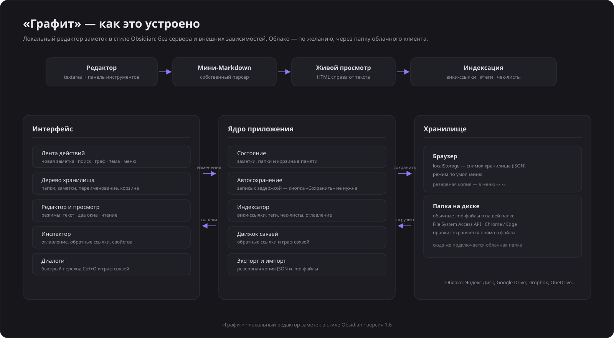
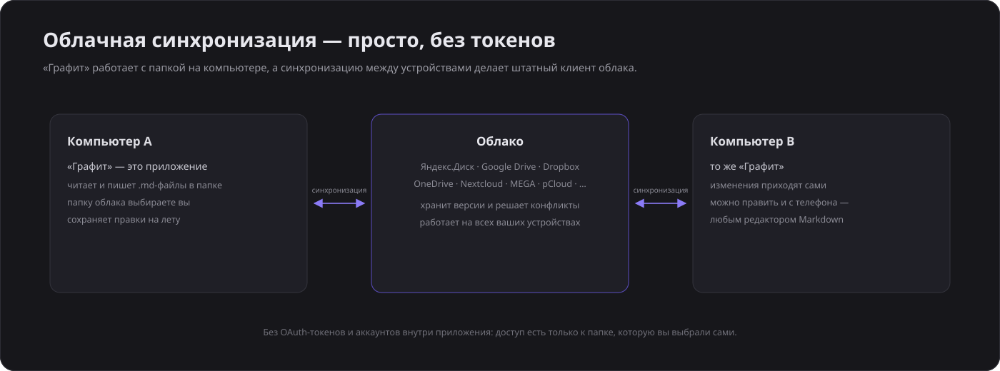

📝
Заметка не выбрана
«Графит» — локальный редактор заметок в стиле Obsidian. Работает прямо в браузере, без сервера: данные хранятся только на ваших устройствах.

Сочетания работают в любой раскладке — и в русской, и в английской.
Поддерживается Markdown, вики-ссылки [[Название]], теги #тег, чек-листы, таблицы и блоки кода.
Необязательный помощник: подключите любой OpenAI-совместимый сервис (кнопка-искра в левой ленте) — он будет следить за текстом, подсказывать оформление, структуру и формулировки, исправлять опечатки и предлагать определения. Подсказки подсвечиваются прямо в тексте: поставьте курсор на подчёркнутый фрагмент — появится карточка с серым вариантом и кнопкой «Применить». Есть поддержка локальных моделей (Ollama). Работает на GitHub Pages и локально; на превью AutoClaw внешние запросы ограничены.
Версия 1.15 · редактор CodeMirror · код открыт, лицензия MIT
